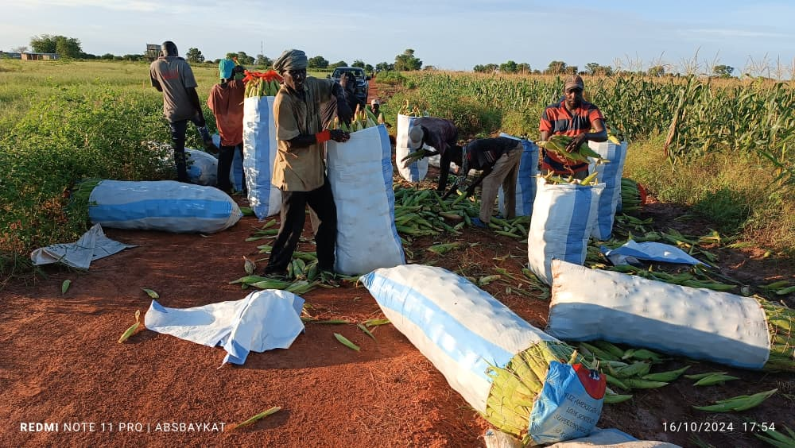

L’impulsion d’un fondateur.
Fondé vers 1996 par M. Alioune Ndour Diouf, le domaine naît d’une passion pour la terre. Le maraîchage constitue sa première activité.
À propos
Depuis 1996, le Domaine Agricole de Néma développe ses activités au cœur du Sénégal.
Fondé vers 1996 par M. Alioune Ndour Diouf, le domaine naît d’une passion pour la terre. Le maraîchage constitue sa première activité.
Au début des années 2000, les premiers manguiers de variété Kent sont implantés. L’arboriculture devient un axe important du développement du domaine.
Aujourd’hui, le domaine exploite plusieurs centaines d’hectares et réunit arboriculture, maraîchage, apiculture, élevage, pisciculture, transformation et exportation.
Le Domaine Agricole de Néma ambitionne de devenir un acteur de premier plan de l’agriculture au Sénégal et en Afrique. Qualité, durabilité et innovation soutiennent son développement et sa contribution à l’économie régionale, au service de ses clients.
